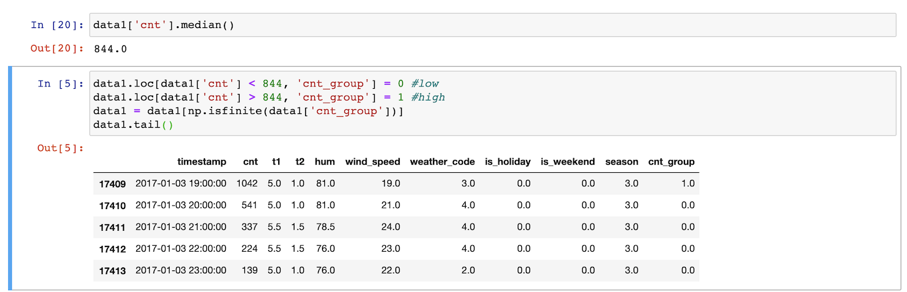
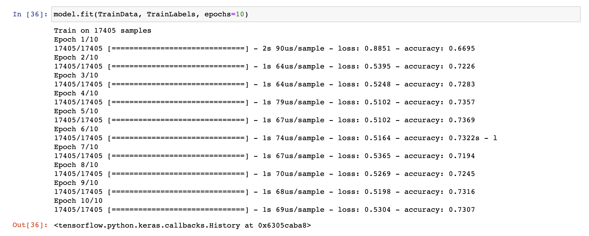

Neural Networks
A neural network is a highly effective algorithm for classifiying a labeled variable.
The network predicts the outcome and then learns from its error--constantly improving
its prediction.
I trained a neural network in Python. A great site to play with the theory behind neural
networks is Neural Network Playground
Predicting Bike Rentals Using a London Bike Sharing Dataset
I used a dataset I found on Kaggle for this project Bike Sharing Dataset
I imported the file into a Jupyter notebook and started changing the columns. As we see below, I classified values above the median as '1' and below the median as '0'

Next, we want to train the neural network. After assigning the label field as the new count variable, we initialize the neural network and begin to training the network to predict the count variable.

And there we have it, the neural network can predict the label of the count variable with ~73% accuracy.
Full code can be found here: https://github.com/basillatif/NeuralNetfoLondonBikeDataset